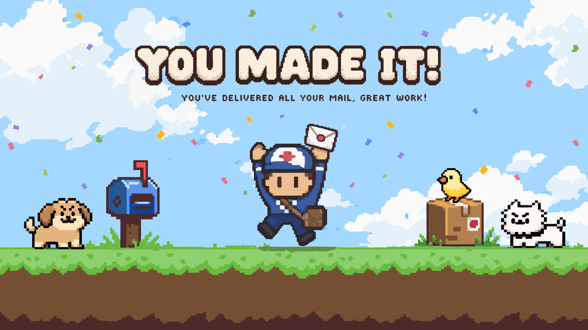
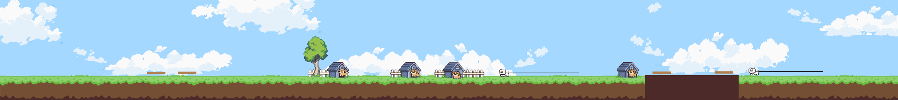
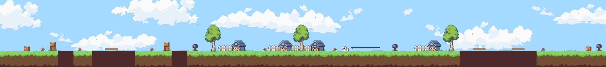
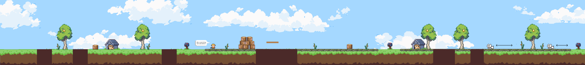
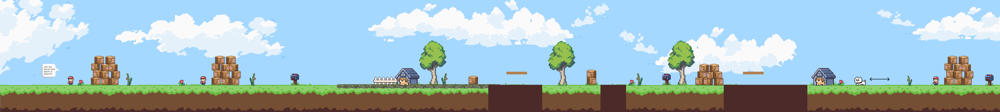

Game Design · 2026
TACTIC
Designing Tourette Syndrome through play
TACTIC is a browser rage-platformer where each obstacle is built around a different way a tic can present in Tourette Syndrome. Instead of explaining tics through text, the game makes players adapt to interruptions they can't fully predict or control.

Overview
- Project
- A3 Final Game, GBDA 302: Game Design
- Team
- Group 3A: [names]
- My role
- [e.g. game design, level design, art, sound, programming]
- Timeline
- [start date] to [end date], [X] weeks
- Platform
- Browser (vanilla HTML, CSS, JavaScript)
- Tools
- Figma, [e.g. VS Code, Procreate, Audacity, GitHub]
- Deliverable
- One playable level: 5 stages, 5 checkpoints, one continuous side-scrolling map
- Play it
- Source on GitHub ↗ [link to hosted build]
The challenge
Design a game that represents a disability through what the player does, not through what the game tells them. The brief judged design decisions and mechanics, not stated intentions.
How might we help players understand the unpredictability of living with tics, without claiming they now know exactly what it feels like?
Design principles from the brief
We turned the course guidance into five rules we checked every decision against:
- Mechanics over metaphor. Each tic type changes what the player must do, not just how the level looks.
- No representation by explanation. No text walls or narration explaining Tourette's; meaning comes from interaction and pacing.
- Not a monolith. Five stages show five different presentations, so no single mechanic stands in for everyone with Tourette's.
- Failure as learning, not weakness. Dying is frequent but cheap; checkpoints frame it as practice, never as something to be "fixed".
- When in doubt, simplify. One clear gotcha per stage instead of several shallow ones.
Inspiration
- Level Devil: the rage-platformer structure, where the level itself breaks expectations.
- Getting Over It with Bennett Foddy: difference represented through constant recalibration rather than story.
- [Add any other references the team used]
Research
Our research showed tics are not one experience: they vary in timing, triggers, frequency and how visible they are. That variety became the structure of the level.
What we did
- [Sources reviewed: e.g. Tourette Canada, clinical overviews, first-person accounts, YouTube creators with Tourette's]
- [Any interviews, community posts or lived-experience input]
- [Existing games or media critiqued for how they represent tics]
Key insights [replace with your real findings]
- Tics can arrive without warning, which interrupts whatever you were focused on.
- Some tics are linked to triggers or actions, so cause and effect is not always obvious.
- People develop their own strategies and rhythms for working around tics.
- Experiences differ widely between people, so no single mechanic can speak for everyone.
What we chose not to do. We avoided making the player character visibly tic, playing tics for comedy, or simulating vocal tics. [Confirm or edit; explain why in a sentence.]
Concept and ideation
We reframed the rage-platformer: its signature move, a level that breaks your expectations, maps naturally onto tics interrupting a planned action. The frustration is the genre's, not a punishment for the player.
From twelve themes to five
Our first level map tried to cover twelve themes across three rows: irregular small tics, cause-and-effect tics, delayed tics, blinking tics, sudden vocal tics, suppressed tics, directional confusion, unwanted attention, dialogue, positive supportive interactions, spatial object interaction, and acceptance and community.

We then restructured it into three rows, each with one thing to teach, written on the map itself:
- "Teach basic box and double box jumps" (cause-and-effect tics) and "teach that dogs are harmful, and 2 types of dogs" (blinking tics)
- "Teach that bird call = freeze movement" (sudden vocal tics) and "teach that you need to move carefully on gravel" (suppressed tics)
- "Teach that other people can help if you 'talk' to them" (acceptance and community)



For the final game we narrowed this to five tic types, one mechanic per stage. [Why you cut the rest: e.g. some themes didn't change what the player does, or would have needed text to explain.]
Early directions
| Concept | Why we moved on |
|---|---|
| [Concept A] | [reason] |
| [Concept B] | [reason] |
| Tic-based rage-platformer (chosen) | Each tic type could become one clear, learnable mechanic |
Visual and audio direction
A pixel-art neighbourhood: you play a mail carrier delivering mail. Friendly, recognisable things (mailboxes, parcels, a duck) sit alongside hazards (dogs in doghouses), so the tone stays light and the mechanics carry the meaning. [Palette, sound, and how you made the art. Add a mood board or style frames.]
Design
One level, five stages, one continuous side-scrolling map. Each stage introduces one tic type as one mechanic, and the question we asked every time was: what does the player have to do differently?
Five tic types, five mechanics
| Stage | Tic type | Mechanic | What the player must do differently |
|---|---|---|---|
| 1 | Irregular small tics | A dog appears without warning | Stay alert and react, not just plan ahead |
| 2 | Cause-and-effect tics | Ground collapses a moment after you jump near certain spots | Notice that their own action triggered it, then adjust |
| 3 | Delayed tics | Two platforms swing on their own timing | Wait and match an outside rhythm instead of their own |
| 4 | Persistent tics | A gap keeps widening once crossed | Commit quickly, because hesitating costs more |
| 5 | Blinking tics | A vertical climb where objects move and flicker out of view | Track things they can't always see |
Teaching without text
Players learn what to touch and what to avoid from the world itself, not instructions:
- Theme and character: an angry dog reads as a hazard immediately.
- Visual composition: solid black gaps lined up with the ground signal broken, unsafe floor.
- Sound: [describe audio cues, e.g. a bark before the dog, a crack before collapse]
- Mailboxes: a friendly, recognisable object that marks safety and progress.
Failure that teaches
Each stage ends at a mailbox checkpoint. Touch it and that's where you respawn, so a death costs one stage, not the whole level. Small wins at each mailbox keep players going, and repeated obstacles let them reuse strategies they've already built.
Difficulty curve
Stage 1 teaches the basics with a single, readable hazard. Difficulty rises slowly, ending in the vertical climb of Stage 5, which combines movement and visibility.
Controls
←→ or AD to move · ↑, Space or W to jump · Esc to pause · ⟲ to restart from the last checkpoint. Progress saves in the browser.
Testing and iteration
We ran two playtests. Each one changed the design, and the second checked whether the first round's fixes worked.
Playtest 1
- Build tested
- [e.g. greybox, stages 1 to 3 only]
- Participants
- [number and who, e.g. 5 classmates]
- Method
- [e.g. think-aloud, observation, post-play survey]
- What we measured
- [e.g. deaths per stage, time to complete, could they name the tic theme?]
What we saw
- [Finding 1, ideally with a number or a direct quote]
- [Finding 2]
- [Finding 3]
What we changed
| Problem | Change |
|---|---|
| [e.g. players didn't realise their jump caused the collapse] | [e.g. added a short delay and crack sound] |
| [problem] | [change] |
Playtest 2
- Build tested
- [e.g. full level, all 5 stages, with art and sound]
- Participants
- [number and who]
- Method
- [method]
- What we measured
- [measures]
What we saw
- [Did the Playtest 1 fixes work?]
- [New finding]
- [What players said about the Tourette's theme]
What we changed
| Problem | Change |
|---|---|
| [problem] | [change] |
Final game
The final build is one continuous level with five stages, five mailbox checkpoints and no tutorial text: players learn each tic-based mechanic by playing it.
Play TACTIC [point this at the hosted build]
Reflection
What worked. [e.g. one clear mechanic per stage kept the theme readable; checkpoints kept frustration productive]
What we'd change. [e.g. test with people who have Tourette's; refine stages where the tic mapping felt loose]
What we learned about representation. A short game can't show what it's like to live with tics, and we didn't try to. The aim was understanding through play: tics aren't chosen, they vary between people, and adapting to them is a skill, not a failure.
My takeaway. [One or two sentences in your own voice about what you'd carry into future design work]